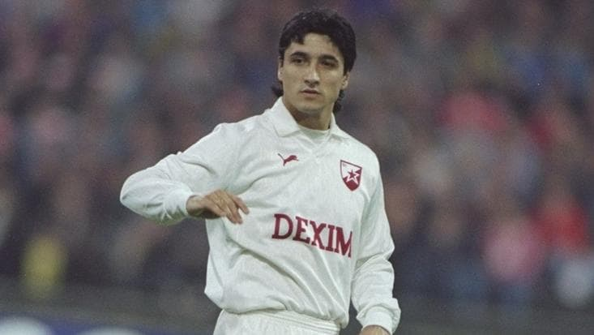
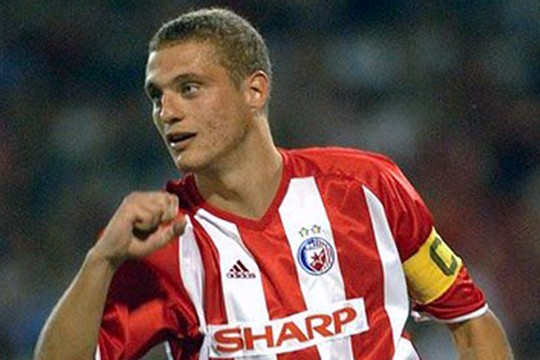
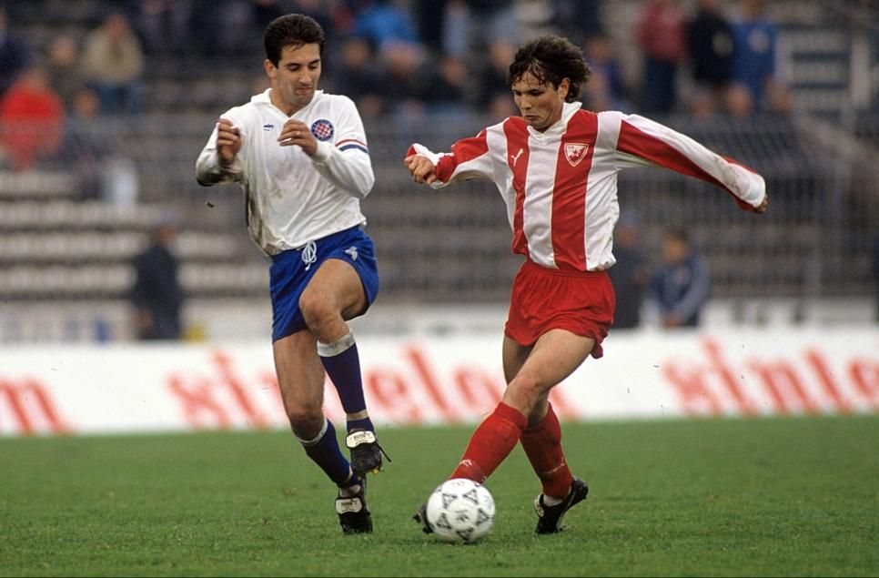

Darko Pančev is one of Crvena Zvezda's most iconic players. Pančev was born in Skopje, Yugoslavia (today Macedonia), in 1965. After playing for Vardar Skopje for eight years, he joined Zvezda in 1988, where he won the 1991 European Cup Final, known today as the UEFA Champions League, one of the most prestigious football tournaments in the world. That season, the 1990/91 season, he was the highest scorer in top-division European football with 34 goals and was awarded the European Golden Boot. His outstanding performances as a striker and his consistency in his game, make him one of the best strikers of all time.
Darko Pančev in action for Crvena Zvezda

Nemanja Vidić, born in 1981, is a former Serbian centre-back and is considered one of the greatest defenders in the history of the sport. He joined Red Star Belgrade in 1996, where he first played in their youth system and started playing with the senior team in 2000. The reason I like Vidić is because he was fearless. Where players were scared to put their feet, Vidić put his head. Players were scared of him because of his strong and fearless mentality, which makes him one of the best of all time.
Nemanja Vidić in action for Crvena Zvezda

Siniša Mihajlović, born in 1969, was a Serbian defender and midfielder. He is considered as one of the best free kick takers of all time. Mihajlović joined Zvezda in 1990, where he won the European Cup Final in 1991. In 1992 he joined AS Roma and began his career in the Serie A, the Italian football league, where he made 353 appearances with four different Clubs. He holds the all-time record in Serie A for most goals from free-kicks with 28 goals. Throughout his entire career, Siniša Mihajlović has always been a consistent player, he was an all-rounder with many qualities. He could deliver long, accurate passes, run over the entire field and quickly change the pace of the game or just shoot at the goal from any distance. His incredible qualities and skills asa player and the impact he had on the sport make him one of the greatest to ever play the game.
Siniša Mihajlović in action for Crvena Zvezda